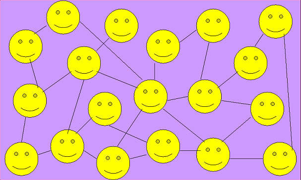

Социальная сеть - это платформа, онлайн-сервис или веб-сайт, предназначенные для построения, отражения и организации социальных взаимоотношений в сети Интернет.
Появление сети Интернет и Всемирной Паутины оказало большое влияние на социальные взаимодействия людей во всём мире.
Первые попытки создания социальных сетей начали происходить в середине 90-х годов.
К таким проектам можно отнести Theglobe.com, Geocities, Tripod.com, Classmates.com
Многие из этих первых проектов главным образом концентрировались на объединении людей через организацию общих чатов, и подталкивали и поощряли людей к распространению личной информации о себе.
К концу 90-х всё это пришло к концепции личной Интернет страницы пользователя. Каждый участник сети имел свою личную страницу, на которой мог выкладывать любую информацию и делиться идеями. Также пользователь имел список друзей и личную анкету, содержащую подробную информацию о себе, для того, чтобы можно было искать других людей для общения и знакомств по заданию интересующих характеристик, например, пола, страны, возрастат и т.д.
В 2000-х стали появляться другие, более специализированные на ведении дневников, размещении фотографий и ведении блогов, социальные сети.
Такие как OpenDiary, HubCulture, Cyworld, MySpace, LinkedIn и много других.
Интересно, что Facebook появился довольно поздно, в 2004 году, и начинал развиваться вообще как проект для ведения учётных записей внутри Гарвардского Университета.
К 2009 году Facebook стал самой популярной социальной сетью в мире.